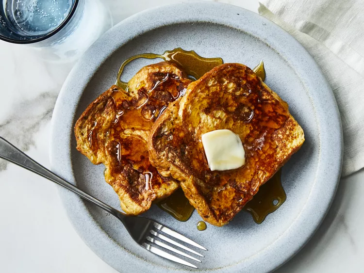

French Toast
If you're looking for the best French toast recipe on the internet, you've come to the right place. This tender, fluffy, and indulgent recipe comes together quickly and easily with just five ingredients you already have on hand.
Here's everything you need to know about making the best French toast of your life, including the best bread to use and what ingredients you need. Plus, get our best storage secrets and freezer hacks.
Ingredients
-
2/3 cup milk
-
2 large eggs
-
1 teaspoon vanilla extract (Optional)
-
1/4 teaspoon ground cinnamon (Optional)
-
Salt to taste
-
6 thick slices bread
-
1 tablespoon unsalted butter, or more as needed
Steps
-
Gather all ingredients.
-
Whisk milk, eggs, vanilla, cinnamon, and salt together in a shallow bowl.
-
Lightly butter a griddle or skillet and heat over medium-high heat.
-
Dunk bread in the egg mixture, soaking both sides.
-
Transfer to the hot skillet and cook until golden, 3 to 4 minutes per side.
-
Serve hot.